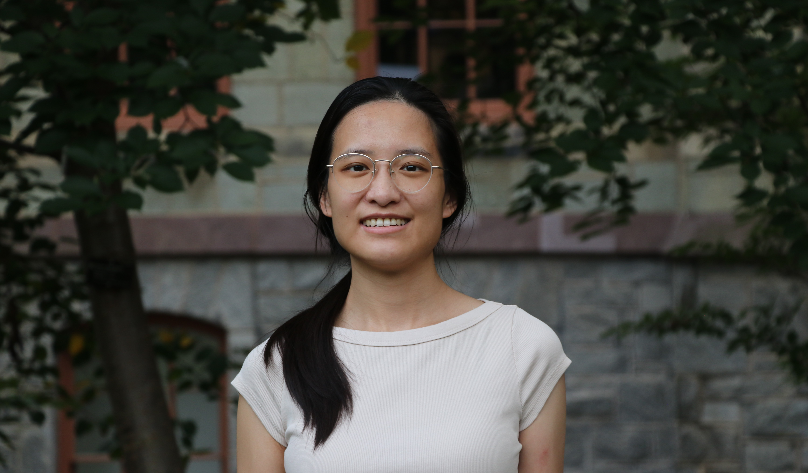
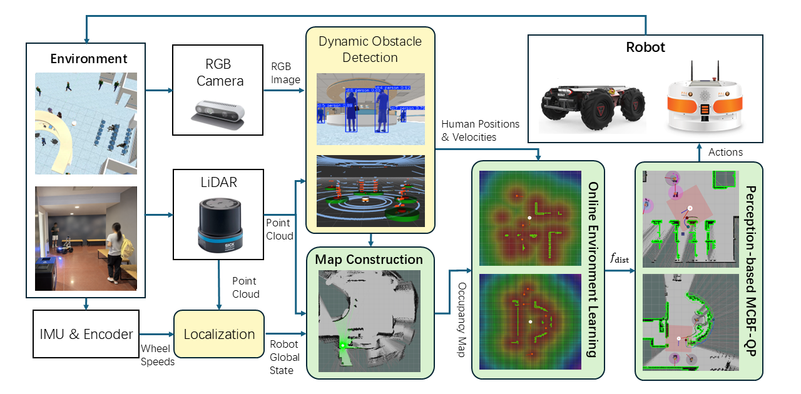
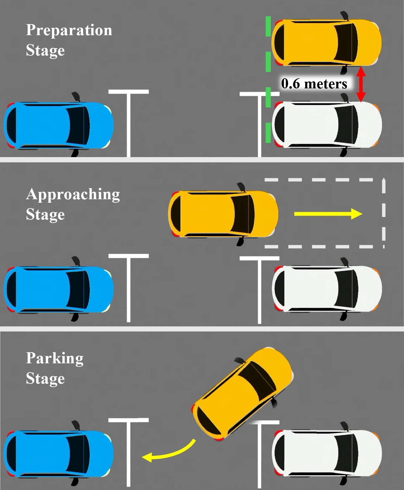

Under Review · International Journal of Robotics Research (IJRR) · 2026
No Undesirable Equilibria, No Collisions: Combining Modulation and Control Barrier Functions for Liveness and Safety in Dynamic Collision Avoidance
Y. Xue and N. Figueroa
I develop fluent, safe, and efficient robot motion planning and learning methods that ensure collision safety while maintaining progress toward goals (liveness) in complex, unstructured, and dynamic environments.
I am a Ph.D. student in Mechanical Engineering and Applied Mechanics at the University of Pennsylvania, advised by Prof. Nadia Figueroa. My research combines control barrier functions with geometric modulation to achieve liveness-aware safety-critical control. I extend this framework to alleviate solver infeasibility through offline path generation and online path adaptation, enable proactive obstacle avoidance via multimodal motion prediction, and support perception-driven navigation in unknown, dynamic environments. In ongoing work, I explore learning-based coordination between planners, trackers, and safety filters to resolve planning conflicts and extend safe navigation to high-dimensional, underactuated robots.

Under Review · International Journal of Robotics Research (IJRR) · 2026
Y. Xue and N. Figueroa
IEEE International Conference on Robotics and Automation (ICRA) · 2025
A. Srikanthan*, Y. Xue*, V. Kumar, N. Matni, and N. Figueroa (*co-first authors)
IEEE Robotics and Automation Letters · 2026
Y. Xue*, Z. Zhang*, K. Åkesson, and N. Figueroa (*co-first authors)

Under Review · IEEE International Conference on Robotics and Automation (ICRA) 2027
J. Li, Y. Xue, Y. Li, S. S. Aditya, and N. Figueroa

IEEE International Conference on Intelligent Transportation Systems (ITSC) · 2026
Y. Xue, T. Mohammadnejad, F. M. Tariq, S. Bae, D. Isele, Y. Sakamoto, N. Figueroa, and J. D’sa
I welcome conversations about robot navigation, safe control, motion planning, and learning-enabled autonomy.
yifanxue@engineering.upenn.edu · GitHub · Google Scholar · LinkedIn